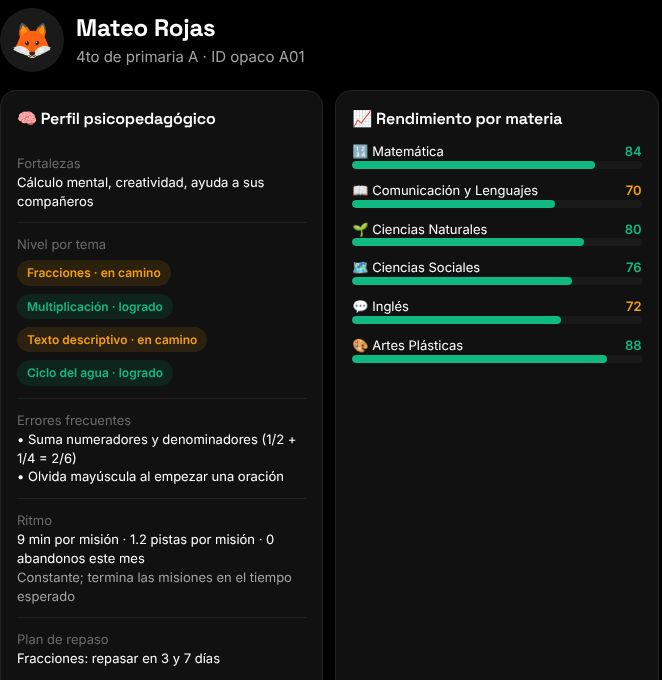
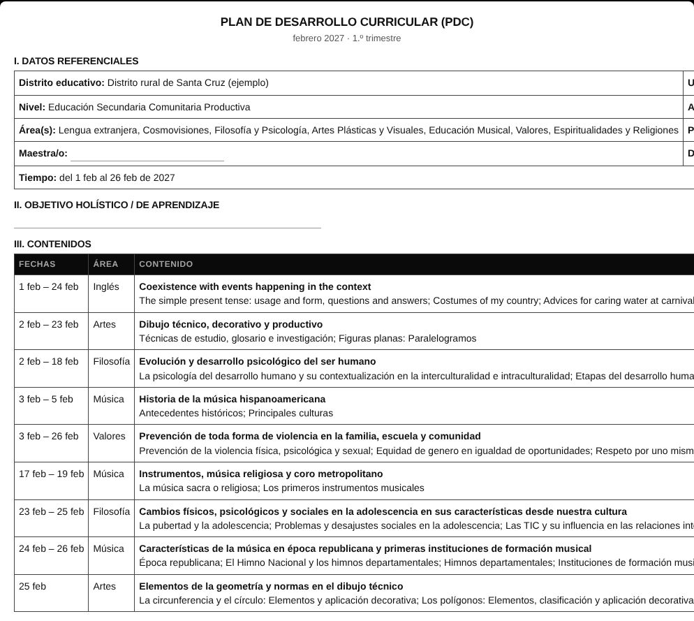

Cada alumno, a su ritmo.
Educación individualizada gracias a la IA: potenciar la inteligencia y el potencial de cada chico, no enseñarles a todos igual.
Propuesta de piloto · U.E. Nuevo Horizonte · 2.º de secundaria
Tocá, deslizá o usá las flechas
Un profe. Muchos chicos. Cada uno con su ritmo.
Ritmos distintos
Unos ya entendieron y se aburren; otros se quedan atrás y no preguntan.
Varias materias
El mismo profe prepara clases de varias áreas, todas las semanas.
Poco tiempo
Cronograma, PDC y papeles se comen horas que serían para los chicos.
No es falta de ganas: con un solo profe, el tiempo no alcanza para atender a cada uno.
Taji y Jochi: dos profes IA para cada alumno
- Explican a su manera, con ejemplos de acá y las veces que haga falta.
- Guían con preguntas: dan pistas, pero la respuesta la encuentra el alumno.
- Un mundo-juego: cada materia es un aula y las tareas son misiones.
- Modo directo para cuando hay apuro: solo las tareas. en desarrollo

Una mentora IA para el profe
Escucha la clase y arma el resumen contra el pensum: qué se vio y qué quedó pendiente.
Arma el cronograma día a día con el calendario oficial, y el PDC listo para imprimir.
Sugiere tareas según lo que pasó en la clase de hoy.
Mapa del curso: cómo viene cada alumno, con propuestas para cada uno.
La IA propone. El profe decide.

Ver a cada alumno, no al promedio
Cada alumno con su perfil: fortalezas, temas logrados y en camino, errores frecuentes y ritmo.
- La IA propone: un repaso, un reto más difícil, con quién trabajar en grupo.
- El profe acepta, cambia o descarta. Nada se aplica solo.
- Lenguaje positivo, sin etiquetas ni diagnósticos.
Vista de todo el curso con propuestas en desarrollo

Qué gana el profe
Cronograma, PDC y resumen de cada clase salen como borrador. El profe revisa y ajusta; no empieza de cero.
Sabe quién necesita repaso y quién está listo para más, antes de la próxima clase.

Lo que dice la evidencia
Tutor IA en Nigeria: 6 semanas de inglés, con docentes guiando.
Banco Mundial, 2025 · ensayo con sorteo
Enseñar según el nivel real de cada chico, no el del grado.
J-PAL, Teaching at the Right Level · 6 ensayos con sorteo en India
Tiempo de planificación de docentes que usaron IA con una guía, sin bajar la calidad.
EEF, Inglaterra, 2024 · ensayo con sorteo
Repartir computadoras sin uso guiado no mejoró matemática ni lenguaje.
BID, Perú 2012 · sorteo en 319 escuelas
DE = desviación estándar, la medida que usan estos estudios. Son resultados de otros países: este piloto tiene que medir los suyos.
Cuidado de los chicos
Sin nombres hacia la IA
Cada alumno es un código (ej. A01). Nombres, fotos y ubicación no salen.
El audio no se guarda
Se usa para armar el resumen y se descarta. El resumen se borra solo.
Con consentimiento
De las familias y del profe, explicando para qué se usa todo antes de empezar.
Bolivia todavía no tiene una ley general de datos personales: por eso aplicamos la regla más estricta.
La propuesta de piloto
Para la escuela y las familias.
Durante 8 a 12 semanas.
Antes y después, comparado con otro curso parecido.
Co-diseñador: lo que no sirve, se cambia.
Qué medimos: lectura y matemática, minutos de uso, tiempo que ahorra el profe y qué opinan profe y alumnos.
Próximos pasos
- Probar el demo juntos.
- Carta de intención del colegio y permiso de la Dirección Distrital.
- Elegir el curso del piloto y uno de comparación; revisar luz, internet y carga de tablets.
- Consentimientos, medición inicial y arranque.
Hablemos.
Nombre
Teléfono
ÑANDÉ Educación · Santa Cruz